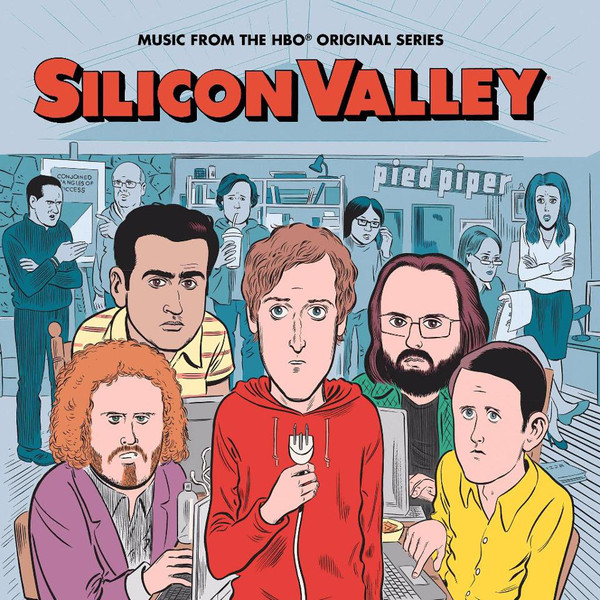

Sinopsis
Richard es un tímido programador que vive en una "incubadora" con Cabezón, Dinesh, Gilfoyle y Erlich (dueño de la casa), sus únicos amigos. Sin saberlo Richard crea un algoritmo revolucionario y las grandes empresas del valle se pelearán por conseguir el algoritmo. Las decisiones de Richard repercutirán en la historia junto a otros sucesos, algunos más afortunados que otros.
Trailer
Canciones
La serie de Silicon Valley cuenta con un disco con varias de las canciones que salen a lo largo de la serie, encontrandose entre ellas la canción principal de la intro, las del final de cada capítulo, etc. Aquí puedes escucharlo:


Strech Your Face